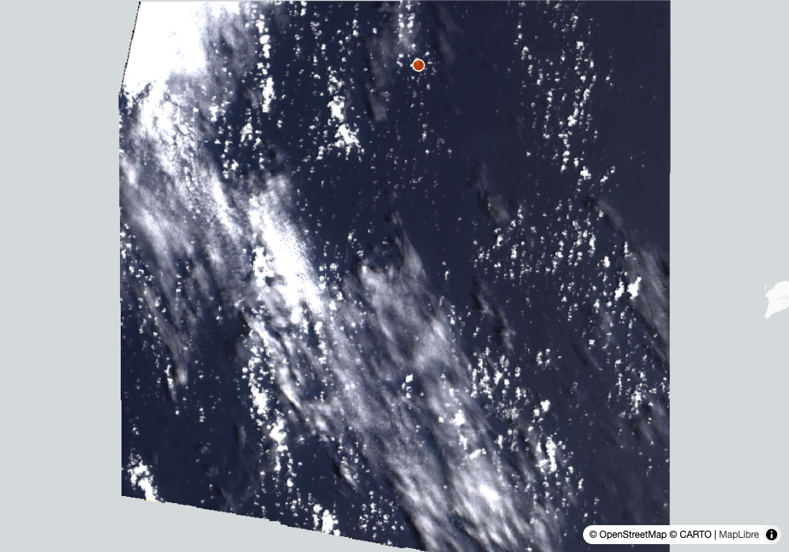
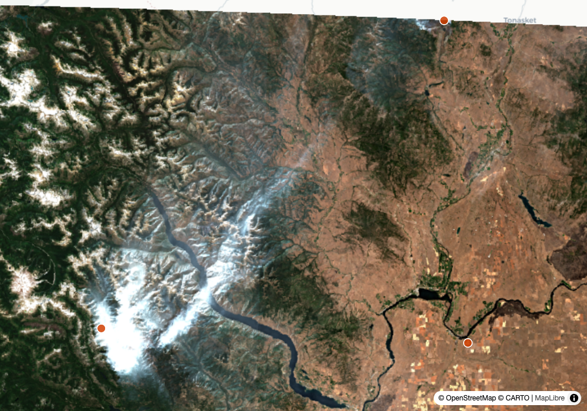
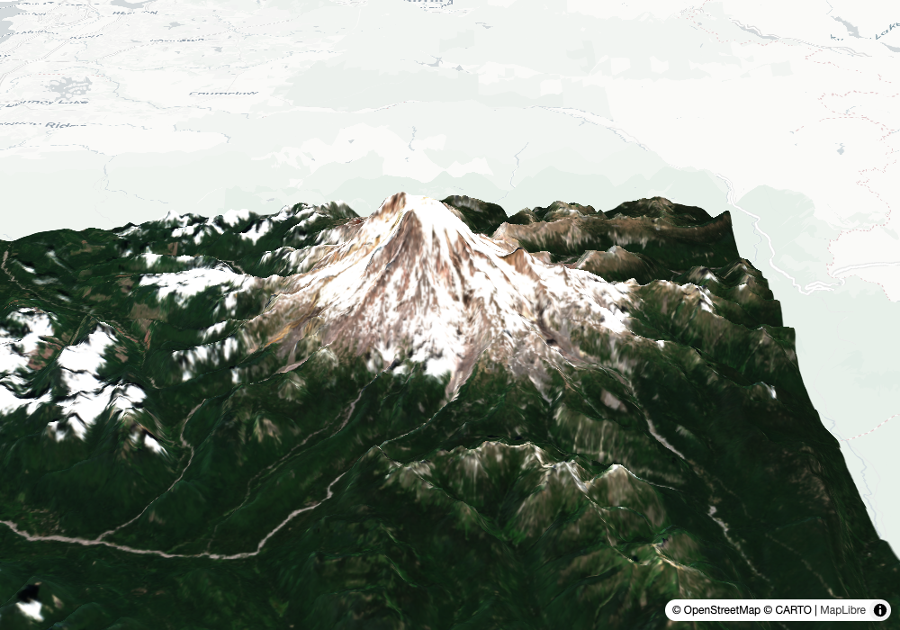
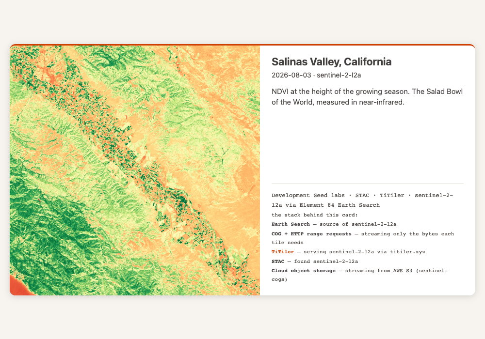
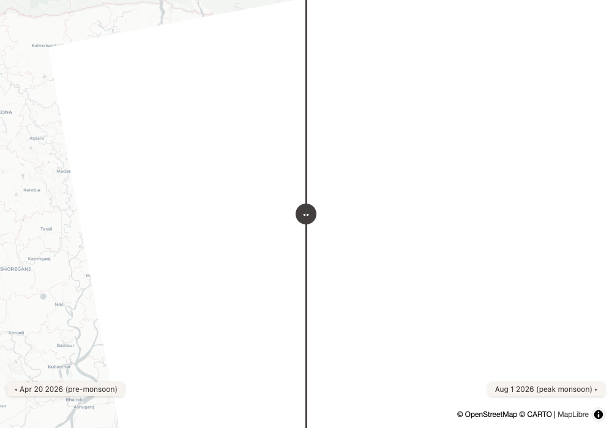
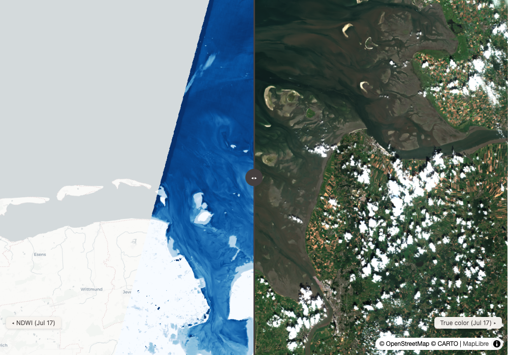
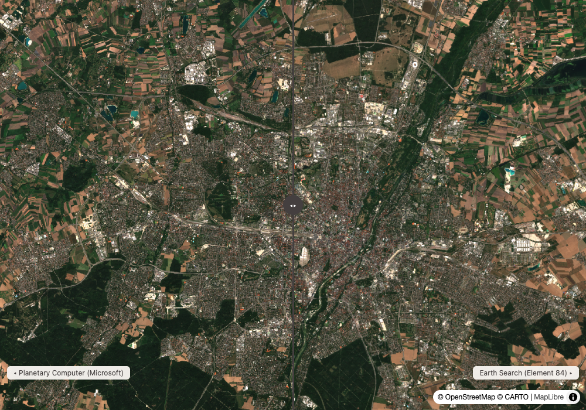
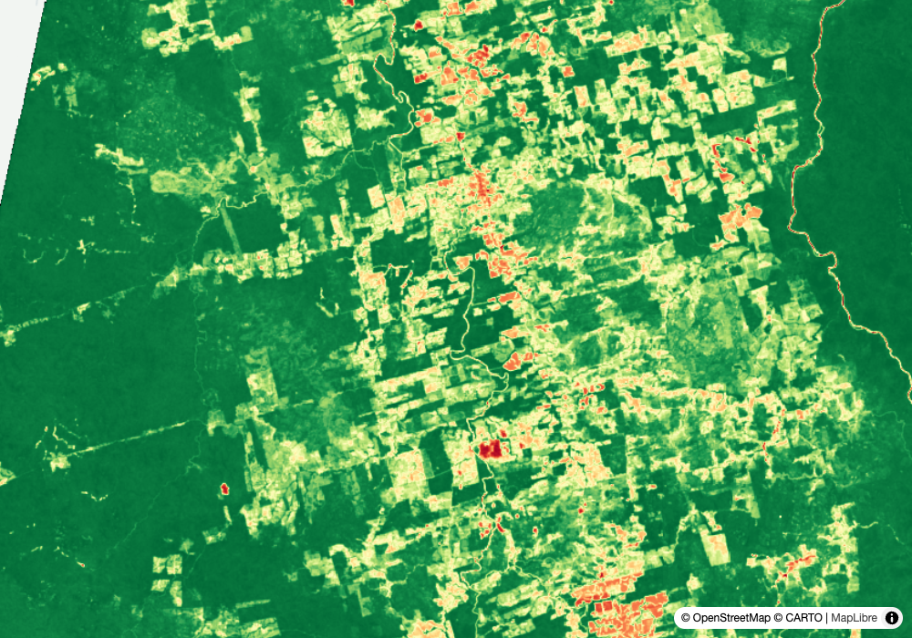
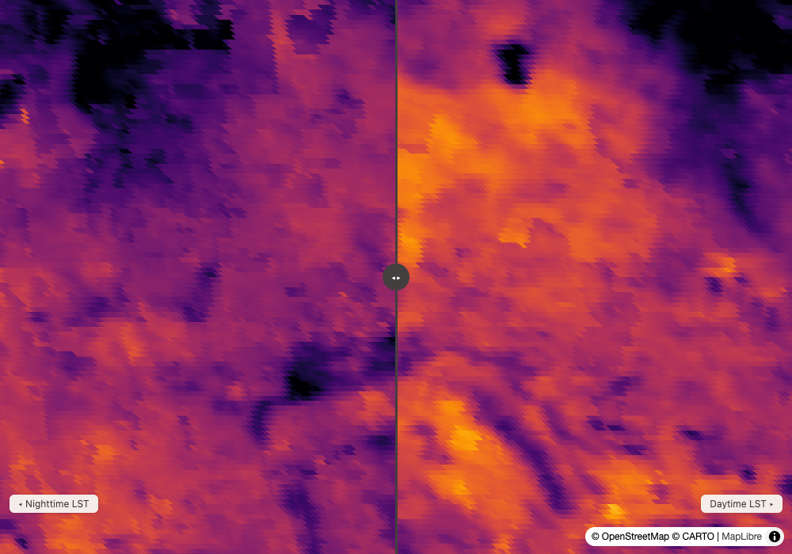

Round 1 — what is actually happening right now
1
global triage
humanitarian response
Input
What are the most severe disaster alerts anywhere in the world right now? Give me the top three by severity and map the worst one with recent imagery.
Output
There is no top three. Super Typhoon Dolphin is the only non-Green alert on Earth — one GDACS Orange against a feed where every other flood, fire, quake and drought is Green. Ranking three would have meant inventing a severity difference that the data does not contain. Dolphin sits at 25.2°N 140.6°E in open ocean: 110 km/h peak winds and 46 mm of rain today, 76 mm tomorrow, nearest inhabited land Chichijima about 260 km northeast.
live map ↗Learning → The honest answer to "give me three" is sometimes "there is one." A severity scale that bottoms out at Green for 30+ events is telling you the ranking question is wrong, not that you should rank anyway.
active_events (EONET + GDACS), weather_summary, render_map
2
live events
disaster response
Input
Find the clearest Sentinel-2 scene of Lake Chelan from the past two weeks, tell me what's burning nearby, and give me a map I can share.
Output
No single scene covers the lake — it straddles two Sentinel-2 tiles. The July 30 pair mosaicked automatically (10UFU at 2.8% cloud, 10UGU at 0.01%) to 100% coverage, with four active fires from EONET on top: LITTLE GIANT sitting right at the lake's west end, plus PEARL HILL, SINLAHEKIN and PTARMIGAN.
live map ↗Learning → This is the July 9 opener re-run. Then it returned one clipped scene. Now the mosaic is the default and nobody had to ask. The first version of this card was broken and a human caught it: the mosaic rendered as a swipe, so each tile sat on its own side of the divider and half the map was blank at every slider position. Auto-mosaic and the older swipe heuristic disagreed — same collection meant "comparison" to one and "two halves of one picture" to the other. Fixed here, with a regression check pinned to these exact tiles.
search_imagery full_coverage_set, active_events, render_map with a geojson layer
3
auto-mosaic + stack
the regression case
Input
Show me Calgary. All of it. And show me what's behind the map.
Output
Fixed, and smarter than expected. Best single scene covers 71.2% — the same missing west edge that needed a reprompt in July. The mosaic fired on its own, and it did not simply grab the newest date: July 31's west tile stops at 51.04°N and Calgary reaches 51.21°N, so it stepped back to the July 29 pair whose union actually covers the city. The Stack panel names the collections, tiler and buckets on screen. live map ↗
live map ↗
Learning → The regression that started this feature is closed. The part worth noticing is that "newest" and "covers the AOI" are different questions, and it answered the second one.
auto-mosaic, stack_layer
Round 2 — the newer artifacts, and index math
4
3d + stack
the roadshow
Input
Mount Rainier in 3D, and show me what's behind the rendering.
Output
A 2.1%-cloud July 30 scene at 98.1% coverage draped over Terrarium elevation at 1.8× exaggeration, with a live slider and an orbit. The Stack panel names the terrain source underneath the imagery, not just the imagery.
live 3D ↗Learning → This is the demo-to-sales-conversation hinge: the picture gets attention, the Stack panel is what turns it into a conversation about the tools that made it.
render_map_3d, stack_layer
5
index postcard
agriculture
Input
NDVI postcard of the Salinas Valley at the height of the growing season.
Output
Made — but the geocoder had to be overridden twice first. "Salinas Valley" resolved to a town in the Philippines; "Salinas Valley California" resolved to a residential street in Simi Valley, 300 km south. The AOI was set by hand, then an August 3 scene at 5.3% cloud and 100% coverage carried the card.
postcard ↗Learning → The failure mode that matters is not that the geocoder missed. It is that it returned a confident, precisely-bounded wrong answer twice, and an unchecked run would have produced a beautiful NDVI card of the wrong continent.
render_postcard with expression + colormap + bbox framing, stack_layer
6
flood radar
humanitarian / monsoon
Input
Peak monsoon: assess flooding around Sylhet, Bangladesh using Sentinel-1 radar since optical will be clouded out — compare backscatter now vs pre-monsoon April.
Output
Radar cuts straight through the monsoon cloud. The pairing is the careful part: the newest pass is August 3 at 23:47 UTC, but April's is 11:56 UTC — a different orbit direction, so the geometry does not compare. Used August 1 at 11:56 UTC instead, matching April 20's pass, both at 100% coverage.
swipe map ↗Learning → Newest is not the same as comparable. Two SAR scenes from opposing passes will differ in backscatter for reasons that have nothing to do with water on the ground.
sentinel-1-grd, render_map compare mode
Round 3 — where the honest answer beat the question
7
epistemics
marine / coastal
Input
Show me the Wadden Sea tidal flats: latest cloud-free Sentinel-2, compute NDWI, and tell me honestly what you can and cannot say about tide state from one scene.
Output
NDVI-style separation works cleanly: mean NDWI −0.21, median −0.46, but the majority value is +0.67 and the standard deviation is 0.53. That is a textbook bimodal split — water and not-water, sharply divided, 72% valid pixels. What it cannot tell you is the tide. One scene is one instant in a 12-hour cycle. Without the tide clock for that timestamp, a large exposed flat and a low-water anomaly are the same picture.
live map ↗Learning → The statistics are real and the conclusion the customer wants is still unavailable. Saying so is the product.
compute_statistics with an expression, render_map overlay
8
catalog trust
data providers
Input
Find the same recent Sentinel-2 scene over Munich in both earth-search and planetary-computer, compare their reported cloud cover, preview both, and tell me if the catalogs agree.
Output
They agree exactly — 1.221937% on both for the August 3 tile, 0.005463% on both for its neighbour, 5.212803% on both for July 31. Six decimal places of agreement is not two independent measurements converging. It is the same ESA-produced metadata republished by two catalogs. Where they genuinely differ is the timestamp: Earth Search reports 10:27:27, Planetary Computer 10:15:59, same granule.
swipe map ↗Learning → Agreement between catalogs is worth almost nothing as a trust signal when both are reading the same upstream field. The datetime disagreement is the one to actually watch, because it will silently break a same-day join.
cross-catalog search, render_map compare mode
9
deforestation
GNW / nature
Input
It's the start of the Amazon dry season — check the area around Novo Progresso in Pará, Brazil for fresh forest clearing: compare vegetation now vs March, look for new bare patches, be honest about what optical can miss, and map what you find.
Output
The August side is excellent: an August 3 mosaic at 0.001–3.2% cloud, NDVI mean 0.74, median 0.83, with the low tail (2nd percentile at 0.33) marking the cleared and bare ground. The March side does not exist. Every March scene over this AOI runs 50% to 99.99% cloud — March is peak wet season in Pará. The comparison the question asks for cannot be made honestly from optical, and the answer is a dry-season baseline plus a recommendation to use Sentinel-1 for the wet-season leg.
live map ↗Learning → "Be honest about what optical can miss" turned out to apply to the comparison date rather than the imagery. A year-over-year prompt written from a temperate-latitude intuition does not survive a tropical wet season.
auto-mosaic, compute_statistics, NDVI overlay
10
urban heat
cities / heat risk
Input
Phoenix in July: use MODIS land surface temperature from Planetary Computer to show the urban heat island — the metro versus the surrounding desert — plus this week's forecast highs.
Output
The premise is inverted, and the data says so cleanly. Daytime land surface temperature: metro 42.8°C, surrounding Sonoran desert 45.1°C — the desert is 2.3°C hotter. At night it flips: metro 34.6°C, desert 33.4°C, the city 1.2°C warmer. Phoenix's urban heat island is a nighttime phenomenon. Irrigated vegetation and shade cool the metro by day, then concrete releases stored heat after dark. The day-to-night swing tells the same story: desert 11.7°C, metro 8.2°C. Air temperature meanwhile hit 46°C on August 1 and stays in the low 40s all week.
swipe map ↗Learning → The single most useful result of the ten, and it only appeared because the statistics were clipped to two named areas rather than read off the whole MODIS tile. Whole-tile stats for this scene span 12°C to 62°C and mean nothing — the tile is most of the American southwest.
modis-11A2-061 day + night bands, compute_statistics clipped to two AOIs, weather_summary
Reproduce
git clone https://github.com/dannybauman/groundstation && cd groundstation
bash scripts/doctor.sh # walks the setup chain, prints the fix
uv run evals/unit_checks.py # offline checks
uv run evals/run_evals.py # live checks against real endpoints
uv run scripts/field_test.py docs/field-test-2026-08-04.cases.json # rebuild this page